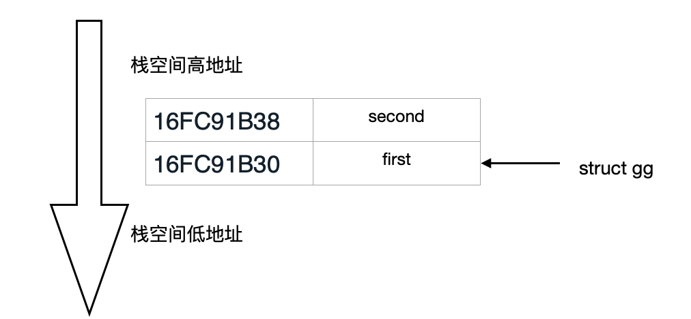
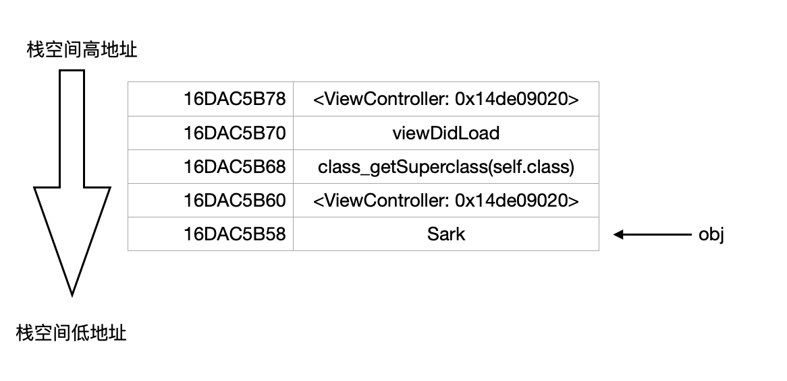

对 OC 神经病院入学考试题目的理解
这是一个老话题，各种文章已经泛滥了，我为什么还要来掺和呢？个人觉得网上的那些解释存在跳跃性，不能和已有的认知联系起来，下面是我探讨这个问题的记录，对我认为比较陌生的地方力求足够详细地解释。如发现错误之处希望得到您能指正！
上代码
1 | |
问题 1
会运行时会报错吗？
如果它看起来像鸭子、游泳像鸭子、叫声像鸭子，那么它可能就是只鸭子。
我们知道，实例对象的isa指向类对象的地址。第 17 行中 cls 指向类对象，&cls 就是类对象的地址，即 obj 指向类对象的地址。将 obj 转换成 id 类型后，即是告诉编译器 obj 可以被 Runtime 当做一个实例对象。相对于常规步骤创建的实例对象，obj 的内存区域并不完整，不过 [(__bridge id)obj speak] 真正运行起来时，由于 isa 指向正确，所以并不影响方法查找，speak 方法还是可以被正确响应。
对象的实质就是指向类对象的地址的变量。
问题 2
如果不会运行报错，最终输出结果是什么？
第 9 行做输出打印，转换成汇编后[1]查看 self.name 是调用 _objc_getProperty:
1 | |
objc_getProperty 的源码[2]：1 | |
源码的第 7 行表明，是在
self 的基础上偏移 offset 进行取值的。在每个 oc 函数调用过程中，self 是一个隐藏参数，是栈空间的一个临时变量，其值在每个栈空间中都不相同，但始终指向对象（也可能是类对象），那么当前的消息接收者（obj）偏移一个字节（指针）长度后指向哪里呢？obj 是栈里面的临时变量，这就需要知道和 objc 相邻的内存单元中存放的是什么。
oc 函数执行时其实有两个隐藏参数 self 和 _cmd ，函数栈空间是从高地址向低地址生长的。当即将执行 [super viewDidLoad] 时，栈空间中的变量从高至低依次是:self、_cmd(viewDidLoad)。接下来看看 [super viewDidLoad] 是如何调用的。
将 [super viewDidLoad] 转换成 c++ 代码[3]后：((void (*)(__rw_objc_super *, SEL))(void *)objc_msgSendSuper)((__rw_objc_super){(id)self, (id)class_getSuperclass(objc_getClass("ViewController"))}, sel_registerName("viewDidLoad"));，可以简写成 objc_msgSendSuper((__rw_objc_super){self,class_getSuperclass(objc_getClass("ViewController"))}, sel_registerName("viewDidLoad"))，第二个参数为 SEL，第一个参数是结构体变量，该结构体的定义：
1 | |
该结构体有两个成员变量，在上述调用时，
object 被赋值为 self，superClass 相当于 class_getSuperclass(self.class)。下面通过示例代码来说明结构体作为栈上的临时变量，成员变量的存放情况：1 | |
输出：
1 | |
可以看出，结构体的第一个成员变量的地址就是该结构体的地址，余下的成员变量向高地址方向依次填充：

执行
[super viewDidLoad] 调用时，先构建了一个 objc_super 结构体变量存放于当前栈上，再加上 cls 和 obj 两个临时变量，执行到 [(__bridge id)obj speak] 时，栈空间结构为：
当通过
self.name 取值时，即是 obj 指针向高地址方向偏移一个指针的位置取值，取到的就是当前 ViewController 实例对象的地址，打印:my name's <ViewController: 0x14de09020>后记
这道题目考察的知识点太多，涉及到函数调用传参、隐藏参数、objc 对象的内存布局、栈空间结构等等，看到他人的解释是似懂非懂，仔细一行一行地跟进时，才发现处处是细节魔鬼，当然能相处这样题目的人更牛！
- 通过 Xcode 的 Assembly 可以查看汇编 ↩
- objc 源码可以在 https://opensource.apple.com/source/objc4/ 下载 ↩
- 此处转换命令：
xcrun -sdk iphoneos clang -rewrite-objc -fobjc-arc -framework Foundation ViewController.m -isysroot /Applications/Xcode.app/Contents/Developer/Platforms/iPhoneSimulator.platform/Developer/SDKs/iPhoneSimulator14.4.sdk↩
本博客所有文章除特别声明外，均采用 CC BY-SA 4.0 协议 ，转载请注明出处！